Our Resident Animals
Bengal Tiger (Panthera tigris tigris)
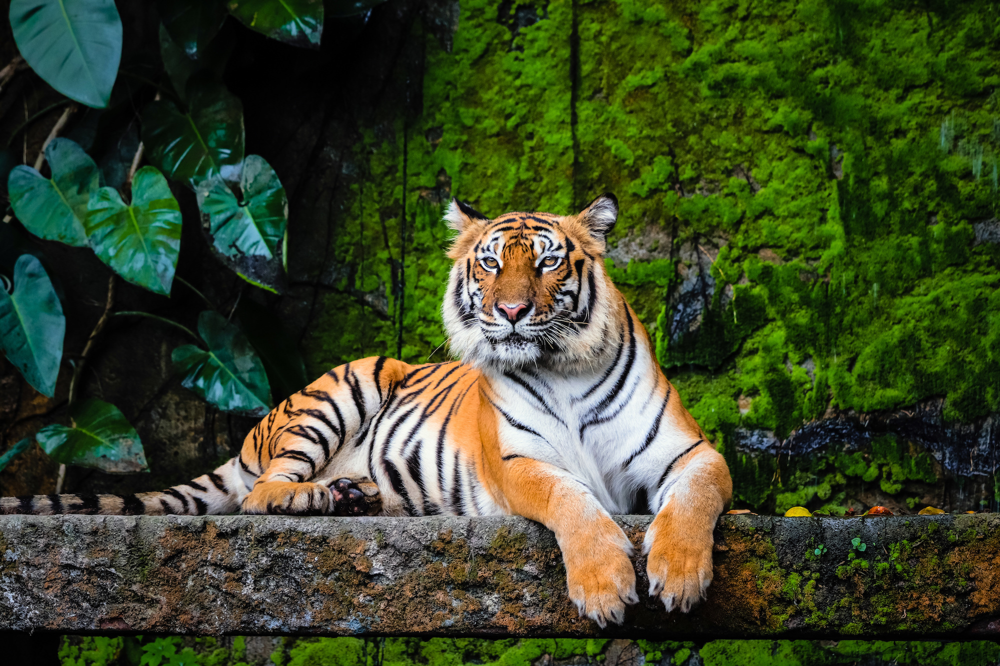
Scientific Name: Panthera tigris tigris
Conservation Status: Endangered
Population: Approximately 2,500 in the wild
Habitat: Tropical forests, grasslands, and mangroves
About: The Bengal Tiger is India's national animal and the largest wild cat species. These magnificent predators can weigh up to 220 kg and are known for their distinctive orange coat with black stripes. Our sanctuary houses 3 rescued Bengal tigers in spacious, naturalistic enclosures.
Asiatic Lion (Panthera leo persica)
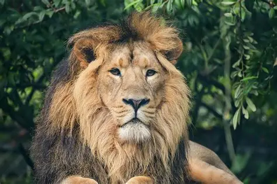
Scientific Name: Panthera leo persica
Conservation Status: Endangered
Population: Around 674 in the wild
Habitat: Dry deciduous forests and grasslands
About: Once found across Asia, the Asiatic Lion now exists only in Gujarat's Gir Forest. Distinguished by a fold of skin along their belly and less developed manes in males, our pride of 4 lions represents hope for this critically endangered species.
Asian Elephant (Elephas maximus)
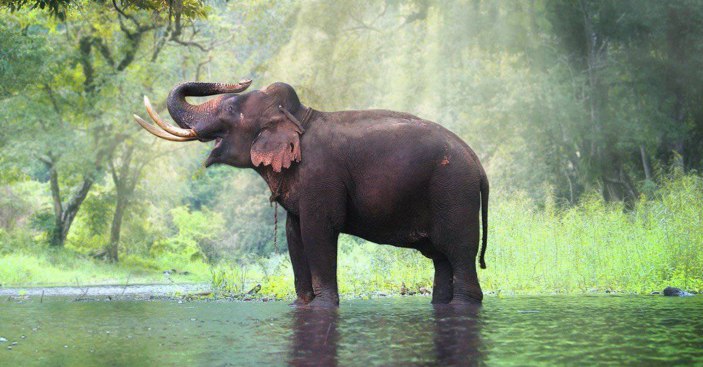
Scientific Name: Elephas maximus
Conservation Status: Endangered
Population: 27,000-29,000 in India
Habitat: Forests, grasslands, and scrublands
About: Asian elephants are smaller than their African cousins and have smaller, rounded ears. Our elephant family of 6 includes rescued individuals from human-wildlife conflict areas. They play a crucial role in seed dispersal and forest regeneration.
Indian Gaur (Bos gaurus)
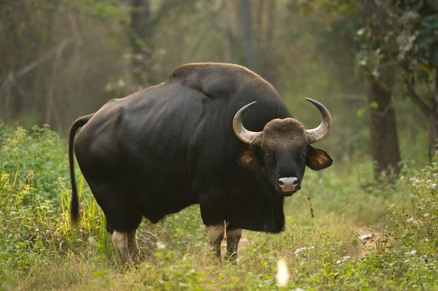
Scientific Name: Bos gaurus
Conservation Status: Vulnerable
Population: 13,000-30,000 estimated
Habitat: Tropical and subtropical forests
About: The Indian Gaur, also known as Indian Bison, is the largest extant bovine. Bulls can weigh up to 1,000 kg. Our herd of 8 gaurs represents the Western Ghats population, showcasing these impressive herbivores' importance to forest ecosystems.
Spotted Deer (Axis axis)
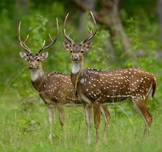
Scientific Name: Axis axis
Conservation Status: Least Concern
Population: Stable in protected areas
Habitat: Grasslands, forests, and woodland areas
About: Also known as Chital, these graceful deer are characterized by white spots on their reddish-brown coat. Our population of 25 spotted deer thrives in our grassland habitat, serving as prey species in the natural food chain.
Indian Leopard (Panthera pardus fusca)
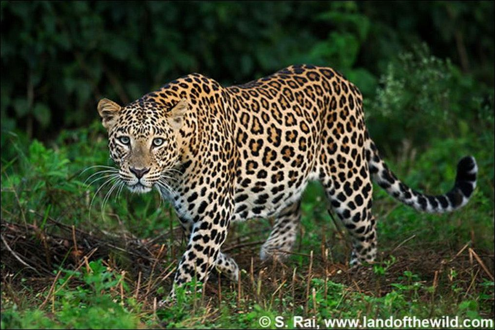
Scientific Name: Panthera pardus fusca
Conservation Status: Vulnerable
Population: 12,000-14,000 estimated
Habitat: Forests, grasslands, and rocky areas
About: The most adaptable of all big cats, Indian leopards are excellent climbers and swimmers. Our 2 leopards were rescued from human-wildlife conflict situations and now live in specially designed climbing-rich enclosures.
Indian Peafowl (Pavo cristatus)
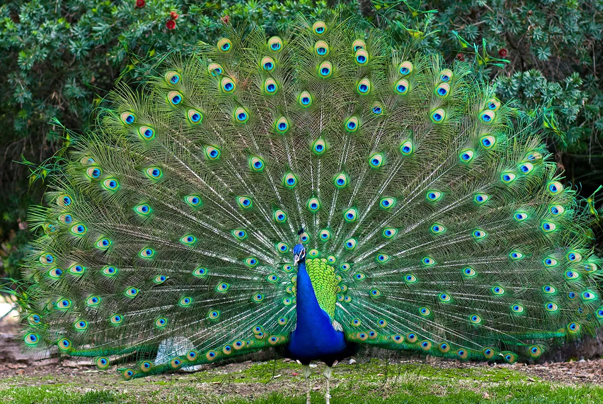
Scientific Name: Pavo cristatus
Conservation Status: Least Concern
Population: Stable, India's national bird
Habitat: Forests, farmlands, and scrublands
About: The spectacular Indian Peafowl is India's national bird. Males display magnificent tail feathers with eye-spots during courtship. Our flock of 15 peafowl adds color and beauty to our sanctuary while helping control pest populations.
Indian Sloth Bear (Melursus ursinus)
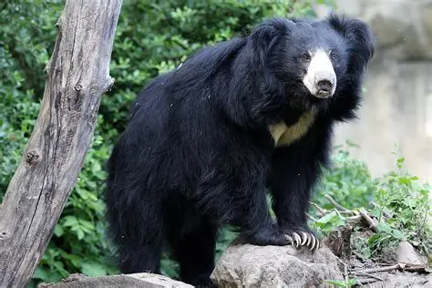
Scientific Name: Melursus ursinus
Conservation Status: Vulnerable
Population: 8,000-12,000 in India
Habitat: Tropical dry forests and grasslands
About: Known for their shaggy black coat and distinctive white V-shaped chest patch, sloth bears are excellent climbers and primarily feed on termites and ants. Our 2 rescued sloth bears were saved from illegal captivity and now live in spacious forest enclosures.
Indian Wild Boar (Sus scrofa cristatus)
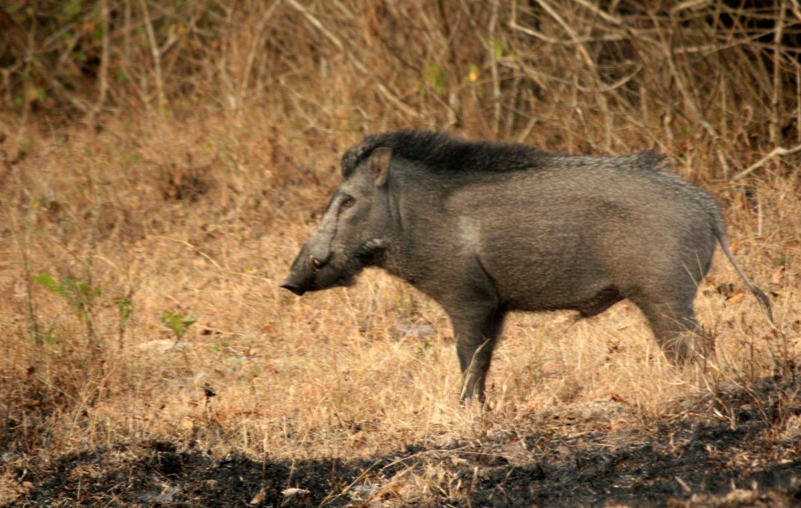
Scientific Name: Sus scrofa cristatus
Conservation Status: Least Concern
Population: Stable across range
Habitat: Forests, grasslands, and agricultural areas
About: Indian wild boars are intelligent omnivores with excellent digging abilities. They play important ecological roles as seed dispersers. Our sounder of 12 wild boars includes individuals relocated from agricultural conflict areas.
Sambar Deer (Rusa unicolor)
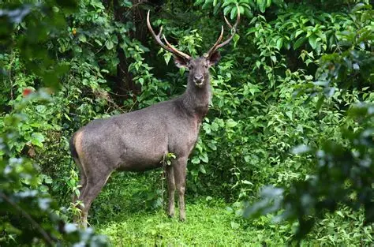
Scientific Name: Rusa unicolor
Conservation Status: Vulnerable
Population: Declining in many regions
Habitat: Dense forests and woodland areas
About: The largest deer species in India, sambars are excellent swimmers and prefer dense forest habitats. Our herd of 8 sambars represents the importance of preserving large herbivores in forest ecosystems.
Indian Pangolin (Manis crassicaudata)
Scientific Name: Manis crassicaudata
Conservation Status: Endangered
Population: Severely declining
Habitat: Dry forests and grasslands
About: The world's only scaly mammal, pangolins are critically threatened by illegal trafficking. Our 3 rescued pangolins are part of a breeding program to help save this unique species known for their ant and termite diet.
Indian Cobra (Naja naja)
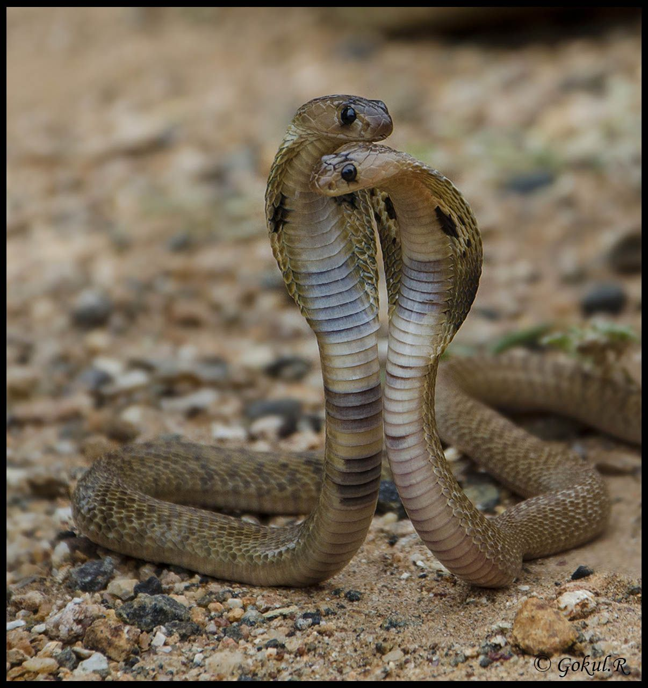
Scientific Name: Naja naja
Conservation Status: Near Threatened
Population: Declining due to habitat loss
Habitat: Forests, fields, and human settlements
About: One of the "Big Four" venomous snakes of India, cobras are excellent pest controllers. Our reptile section houses 6 rescued cobras in naturalistic enclosures, educating visitors about their ecological importance.
Indian Flying Fox (Pteropus giganteus)
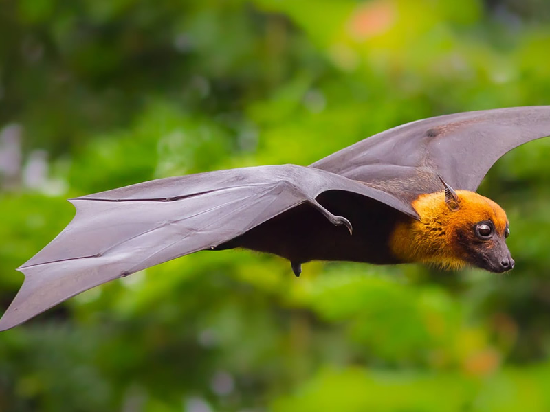
Scientific Name: Pteropus giganteus
Conservation Status: Least Concern
Population: Stable but facing local threats
Habitat: Tropical forests and urban areas
About: India's largest bat with a wingspan up to 1.5 meters, flying foxes are crucial pollinators and seed dispersers. Our colony of 40 flying foxes demonstrates the vital role of bats in maintaining healthy ecosystems.
![[Pangolin Image Placeholder]](Pangolin.webp)